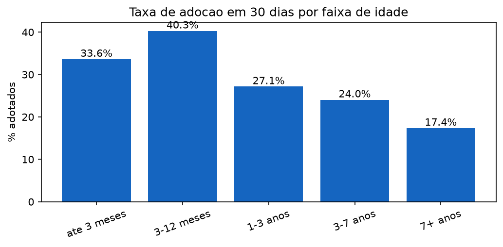
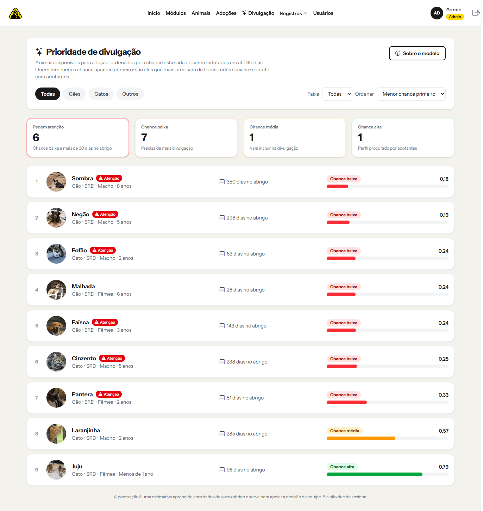
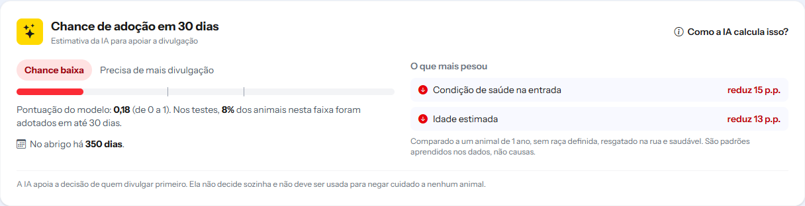
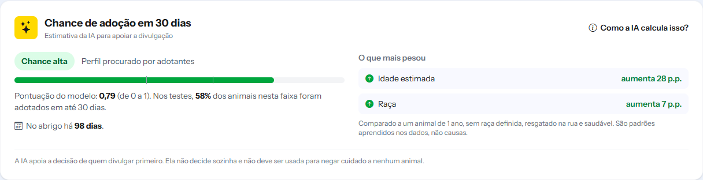
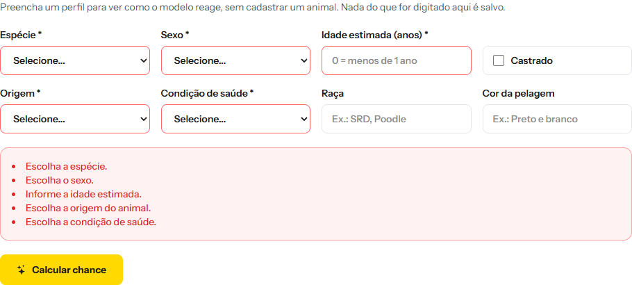
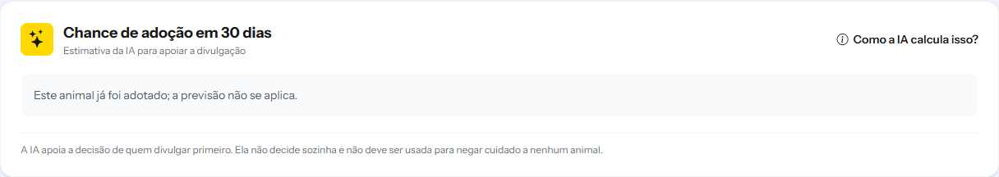
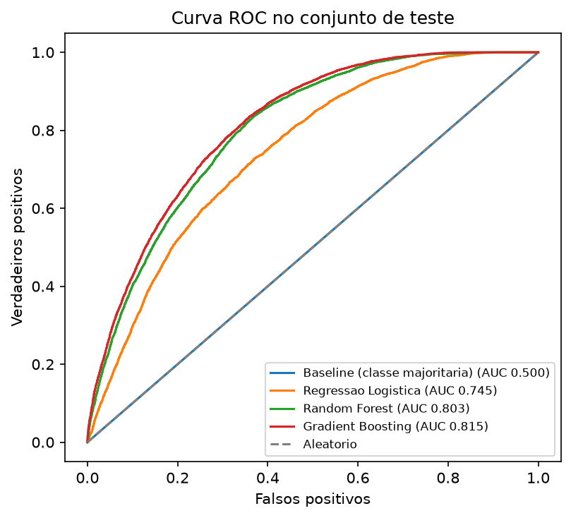
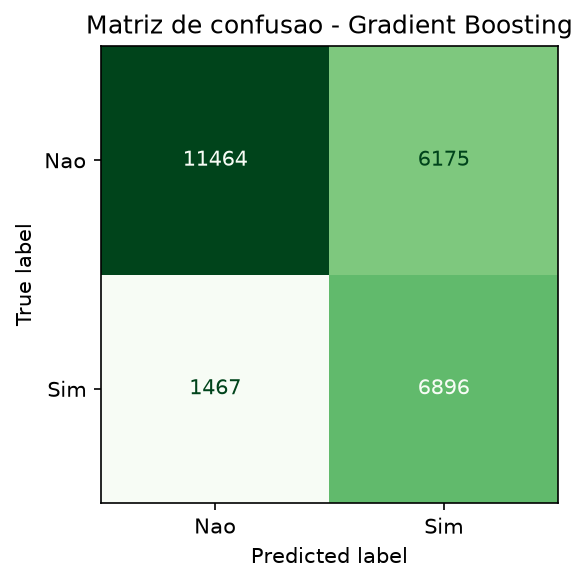
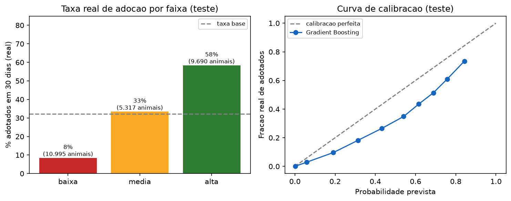

Centro Universitário UNIRIOS
Bacharelado em Sistemas de Informação
Guilherme Matheus Silva Oliveira
Pedro Victor Correia de Souza Santos
Erivelton Brasil Batista
Victor Hugo Sousa Oliveira
Rubriel Luan Marques de Lima
Priorização de divulgação para adoção com aprendizado de máquina no sistema ARDAP
Paulo Afonso
2026
Guilherme Matheus Silva Oliveira
Pedro Victor Correia de Souza Santos
Erivelton Brasil Batista
Victor Hugo Sousa Oliveira
Rubriel Luan Marques de Lima
Priorização de divulgação para adoção com aprendizado de máquina no sistema ARDAP
Relatório técnico da etapa de Inteligência Artificial do Projeto Integrador, apresentado à disciplina de Inteligência Artificial do 6º período do Bacharelado em Sistemas de Informação do Centro Universitário UNIRIOS.
Professor: Ronierison Maciel
Paulo Afonso
2026
A Associação Recanto dos Animais em Perigo (ARDAP), de Paulo Afonso/BA, resgata mais animais do que consegue divulgar, e a escolha de quem divulgar primeiro é feita por intuição. Este relatório descreve o recurso de Inteligência Artificial agregado ao sistema web da ONG: um modelo de classificação que estima a chance de cada animal ser adotado em até 30 dias e ordena os animais disponíveis em uma lista de prioridade de divulgação. O modelo foi treinado com 173.341 entradas da base pública do Austin Animal Center (EUA). Foram comparados quatro modelos, e o Gradient Boosting foi escolhido pelo maior F1 macro na validação. No conjunto de teste, obteve F1 macro de 0,697 e ROC-AUC de 0,815, contra 0,404 e 0,500 de uma referência que sempre prevê a classe majoritária. As faixas de pontuação exibidas na interface separam animais com taxas reais de adoção de 8%, 33% e 58%, e entre os 10% de menor pontuação 99,9% não foram adotados no período. O modelo foi integrado à API FastAPI e à interface React do sistema, com cartão no perfil do animal, tela de prioridade, página “Sobre o modelo” e 46 testes automatizados. As principais limitações são a origem estrangeira dos dados e a falta de calibração das probabilidades, tratadas na interface com faixas e taxas reais.
Palavras-chave: aprendizado de máquina; adoção de animais; gradient boosting; priorização; sistemas web.
A ARDAP resgata, trata e encaminha animais para adoção em Paulo Afonso/BA. Durante o Projeto Integrador, a equipe desenvolveu um sistema web que substitui os formulários em papel da ONG: cadastro de animais com foto, registros de resgate encaminhados pela prefeitura (SUPATAS), termos de adoção, castração, cirurgia e eutanásia, declarações de hipossuficiência e relatórios de prestação de contas. O sistema é composto por uma interface em React e TypeScript, uma API em Python com FastAPI e SQLAlchemy e um banco MySQL.
Com o histórico de cada animal centralizado, surgiu a oportunidade de usar esses dados para apoiar uma decisão que hoje não tem apoio nenhum: quais animais divulgar primeiro. Nesta etapa, a equipe agregou ao sistema um recurso de Machine Learning que estima a chance de cada animal ser adotado em até 30 dias e organiza os animais disponíveis em uma lista de prioridade de divulgação.
O recurso aparece em três pontos do sistema: (a) uma nova tela, “Divulgação”, acessível pelo menu principal; (b) um cartão no perfil de cada animal, com a faixa de chance, os dias no abrigo e os fatores que mais pesaram; e (c) uma página “Sobre o modelo”, que explica em linguagem simples o que a IA faz, com quais dados, com que desempenho e com quais limites. O eixo principal é o de Machine Learning (classificação supervisionada), com análise exploratória de dados no notebook de treino.
O restante deste relatório descreve o problema (Seção 2), a fundamentação da técnica (Seção 3), a metodologia (Seção 4), a arquitetura e a implementação (Seções 5 e 6), os experimentos e resultados (Seções 7 a 9), as limitações (Seção 10), a declaração de uso de IA generativa (Seção 11) e a contribuição dos integrantes (Seção 12).
A ONG recebe mais animais do que consegue divulgar. A divulgação depende de ações com custo de tempo e de pessoas: levar animais a feiras de adoção, produzir fotos e textos para as redes sociais e entrar em contato com possíveis adotantes. Como os voluntários são poucos, a cada semana é preciso escolher alguns animais.
Como é resolvido hoje. A escolha é feita por intuição de quem está no abrigo. Animais filhotes e de aparência mais procurada tendem a ser adotados sozinhos, enquanto animais idosos, doentes ou resgatados em más condições permanecem por meses sem que a equipe perceba que estão ficando para trás. No banco de demonstração do sistema, 6 dos 9 animais disponíveis estão há mais de 30 dias no abrigo e têm chance baixa de adoção segundo o modelo.
Usuário. Funcionário ou administrador do sistema responsável pela divulgação.
Decisão apoiada. Quais animais divulgar primeiro nesta semana.
Por que IA. A chance de adoção depende da combinação de vários atributos (idade, espécie, origem, condição de saúde, raça, cor), com interações não lineares: um filhote resgatado na rua tem perfil diferente de um adulto entregue pelo tutor. Regras fixas escritas à mão não capturam essas combinações, enquanto um modelo supervisionado aprende com milhares de desfechos reais. O recurso não substitui a decisão da equipe: ordena os animais e explica a ordem, para que a equipe decida com mais informação.
O que melhora. A equipe passa a ter, em uma única tela, todos os animais disponíveis ordenados pela necessidade de divulgação, com alerta para quem está há mais de 30 dias no abrigo com chance baixa.
Na aprendizagem supervisionada, um modelo aprende uma função que relaciona atributos de entrada a um rótulo conhecido, a partir de exemplos (FACELI et al., 2021; GÉRON, 2019). Aqui o rótulo é binário: o animal foi ou não adotado em até 30 dias após a entrada no abrigo. O modelo devolve uma pontuação entre 0 e 1, e um limiar transforma a pontuação em decisão.
Regressão Logística combina linearmente os atributos e aplica a função logística, sendo simples e interpretável, mas incapaz de capturar interações sem que elas sejam criadas manualmente. Random Forest (BREIMAN, 2001) treina muitas árvores de decisão em amostras diferentes dos dados e combina seus votos, o que reduz a variância e captura relações não lineares. Gradient Boosting (FRIEDMAN, 2001) também combina árvores, mas de forma sequencial: cada nova árvore corrige os erros das anteriores, seguindo o gradiente da função de perda. A implementação usada, HistGradientBoostingClassifier do scikit-learn (PEDREGOSA et al., 2011), agrupa os valores numéricos em faixas (histogramas), técnica popularizada pelo LightGBM (KE et al., 2017), o que torna o treino rápido em bases com centenas de milhares de linhas.
Como referência mínima (baseline), usou-se um classificador que sempre prevê a classe mais frequente (“não adotado”). Qualquer modelo útil precisa superá-lo.
Com classes desbalanceadas (32% de adotados), a acurácia engana: o baseline acerta 68% sem aprender nada. Por isso a escolha do modelo usou o F1 macro, média do F1 das duas classes, e a avaliação incluiu precisão, recall, ROC-AUC e PR-AUC. A ROC-AUC mede a probabilidade de o modelo dar pontuação maior a um animal adotado do que a um não adotado; a PR-AUC é mais informativa em bases desbalanceadas (SAITO; REHMSMEIER, 2015). Como a interface ordena animais pela pontuação, também foi avaliada a calibração: se, entre os animais com pontuação 0,7, cerca de 70% de fato são adotados. Modelos treinados com pesos de classe tendem a distorcer as probabilidades (NICULESCU-MIZIL; CARUANA, 2005). A calibração foi medida pela curva de confiabilidade e pelo Brier score (BRIER, 1950).
A importância global dos atributos foi medida por permutation importance: embaralha-se uma coluna e mede-se quanto a ROC-AUC cai (BREIMAN, 2001; FISHER; RUDIN; DOMINICI, 2019). Para explicar cada previsão individual na tela, usou-se uma análise contrafactual simples, descrita na Seção 6.3.
Tabela 1 — Alternativas avaliadas para o recurso
| Alternativa | Por que não foi a escolhida |
|---|---|
| Regras manuais (ex.: “idosos primeiro”) | Não capturam combinações de atributos e não têm como ser avaliadas com métricas. |
| Regressão de tempo até a adoção | Muitos animais nunca são adotados (transferência, retorno ao tutor, óbito), o que exige modelos de sobrevivência; a classificação em janela fixa é mais simples de explicar e de avaliar. |
| Redes neurais | Dados tabulares de tamanho médio, em que modelos de árvores costumam ser tão bons ou melhores, com treino mais rápido e mais fácil de interpretar. |
| API externa de IA generativa | O problema não é de linguagem, o resultado não seria avaliável com métricas e a atividade exige componente próprio. |
Fonte: elaborada pelos autores.
A ONG ainda não tem histórico digital suficiente para treinar um modelo (os registros estavam em papel até a implantação do sistema). Por isso foi usada a base pública do Austin Animal Center, maior abrigo municipal de Austin, Texas (EUA), disponível no portal de dados abertos da cidade (CITY OF AUSTIN, 2025a; 2025b), com licença de domínio público e acesso pela API Socrata, sem autenticação. A base tem dois conjuntos: entradas (intakes) e desfechos (outcomes) de cada animal. O download é reprodutível pelo script ai-model/scripts/baixar_dados.py; os arquivos brutos (~50 MB) ficam fora do Git, e uma amostra tratada de 3.000 linhas está em datasets/amostra.csv.
Nenhum dado pessoal é usado: apenas atributos dos animais. Os dados do sistema da ONG não foram usados no treino, apenas na inferência.
Cada entrada foi ligada ao primeiro desfecho posterior do mesmo animal. O alvo vale 1 se esse desfecho foi uma adoção em até 30 dias, e 0 para qualquer outro desfecho, para adoções posteriores a 30 dias e para animais que permaneceram no abrigo além da janela. Entradas sem desfecho e ainda dentro da janela de 30 dias no fim da base foram removidas, pois seu rótulo é desconhecido (censura à direita), assim como registros com datas inconsistentes. Restaram 173.341 entradas, de outubro de 2013 a maio de 2025, com 32,2% de positivos.

Figura 1 — Taxa de adoção em 30 dias por faixa de idade (análise exploratória)
Fonte: elaborada pelos autores a partir de City of Austin (2025a; 2025b).
A análise exploratória confirmou padrões esperados do domínio: animais com até um ano têm taxa de adoção em 30 dias entre 34% e 40%, contra 17% dos animais com 7 anos ou mais (Figura 1). Filhotes com menos de 3 meses têm taxa um pouco menor que os de 3 a 12 meses porque muitos ainda não podem ser adotados ao chegar (precisam de idade mínima ou de lar temporário).
Foram usados apenas atributos que o cadastro do ARDAP também possui, para que o modelo pudesse ser aplicado aos animais da ONG:
Tabela 2 — Atributos do modelo e campos correspondentes no ARDAP
| Atributo do modelo | Base de Austin | Cadastro do ARDAP |
|---|---|---|
| espécie | animal_type | especie (cão, gato, outro) |
| sexo, esterilizado | sex_upon_intake | sexo e castrado |
| idade em dias, idade ausente | age_upon_intake | idade_estimada (anos) |
| raça principal, misto | breed | raca |
| cor principal | color | cor_pelo (texto livre) |
| tipo de entrada | intake_type | origem_resgate e vínculo com SUPATAS |
| condição de entrada | intake_condition | situação no SUPATAS e medicacao_necessaria |
| mês de entrada | data da entrada | data de recebimento ou de cadastro |
Fonte: elaborada pelos autores.
Atributos numéricos receberam imputação pela mediana e padronização; categóricos, codificação one-hot com agrupamento de categorias com menos de 25 ocorrências e descarte de categorias desconhecidas na inferência; binários foram mantidos. Todo o pré-processamento faz parte do mesmo Pipeline do scikit-learn salvo com o modelo, o que evita diferenças entre treino e uso. Os dados foram divididos de forma estratificada em treino (70%, 121.338), validação (15%, 26.001) e teste (15%, 26.002), com semente fixa 42.
Os modelos foram comparados na validação pelo F1 macro. No modelo vencedor, o limiar de decisão foi ajustado na validação para maximizar o F1 da classe “adotado”. O conjunto de teste foi usado uma única vez, ao final, para as métricas reportadas. Depois da integração, o mesmo teste foi reutilizado apenas para medir as faixas e a calibração, sem alterar o modelo.
O recurso segue a arquitetura proposta para a atividade: o modelo é treinado por scripts reprodutíveis, salvo em arquivo e carregado pela API ao iniciar. O navegador nunca acessa o modelo; ele envia o pedido e exibe o resultado.
Figura 2 — Arquitetura do recurso de IA no sistema ARDAP
Fonte: elaborada pelos autores.
Tabela 3 — Responsabilidade de cada componente
| Componente | Responsabilidade |
|---|---|
ai-model/scripts/ baixar_dados.py, treinar.py | Baixam os dados, montam o alvo, treinam e comparam 4 modelos e salvam modelo, métricas e figuras. |
ai-model/scripts/avaliar_faixas.py | Mede a taxa real de adoção por faixa, a ordenação e a calibração no conjunto de teste. |
Backend/app/ia/traducao.py | Converte o cadastro do ARDAP para o vocabulário da base de treino. |
Backend/app/ia/modelo.py | Carrega o modelo uma vez, calcula pontuação, faixa e fatores e resume as métricas. |
Backend/app/routers/ia.py | Rotas /ia, autenticação, validação de entrada e tratamento de erros. |
Frontend/src/components/CartaoIA.tsx | Cartão “Chance de adoção em 30 dias” no perfil do animal. |
Frontend/src/pages/PrioridadeDivulgacao.tsx | Lista de prioridade com filtros, ordenação e alertas. |
Frontend/src/pages/SobreModelo.tsx | Página “Sobre o modelo” (RF05) com métricas, limites e simulador. |
Fonte: elaborada pelos autores.
Foram criadas quatro rotas, todas protegidas pelo mesmo login (JWT) do resto do sistema:
Tabela 4 — Rotas do recurso de IA
| Rota | Uso | Erros tratados |
|---|---|---|
POST /ia/adocao/{animal_id} | Previsão de um animal cadastrado | 404 (não existe), 409 (adotado ou eutanasiado), 503 |
POST /ia/adocao/simular | Previsão de um perfil digitado | 422 com mensagens em português, 503 |
GET /ia/prioridade | Animais disponíveis ordenados pela chance | 503 |
GET /ia/modelo | Métricas para a página “Sobre o modelo” | 503 |
Fonte: elaborada pelos autores.
O modelo é carregado uma única vez, no início da API, e mantido em memória (functools.lru_cache). Se o arquivo não existir, a API inicia normalmente e só as rotas /ia respondem 503 com uma mensagem clara, sem derrubar o restante do sistema.
O ponto mais delicado da integração foi aplicar a animais de Paulo Afonso um modelo treinado com valores em inglês. O módulo traducao.py converte cada campo, por exemplo: espécie cao → Dog; cor “Marrom tigrado” de gato → Brown Tabby; raça “Pastor Alemão” → German Shepherd; gato SRD → Domestic Shorthair (como Austin registra gatos sem raça); origem “Entregue pelo antigo tutor” → Owner Surrender; situação “acidentado” no SUPATAS → Injured; idade 0 (“menos de 1 ano”) → 120 dias. Valores sem equivalente viram categorias desconhecidas, que o codificador do modelo ignora.
# Backend/app/ia/traducao.py (trecho)
def tipo_entrada(origem: str | None, veio_do_supatas: bool) -> str:
if veio_do_supatas:
return "Stray"
texto = normalizar(origem)
if any(p in texto for p in ("tutor", "entregue", "devolvid")):
return "Owner Surrender"
if "abandon" in texto:
return "Abandoned"
return "Stray"
Para mostrar “o que mais pesou” no perfil do animal, cada atributo (idade, castração, origem, saúde, raça e cor) é trocado, um de cada vez, pelo valor de um animal de referência (1 ano, não castrado, sem raça definida, resgatado na rua e saudável), e mede-se a variação da pontuação. Todas as variações são calculadas em uma só chamada ao modelo. Efeitos menores que 2 pontos percentuais não são exibidos.
# Backend/app/ia/modelo.py (trecho)
for nome, colunas in GRUPOS_FATOR.items():
if all(linha[c] == REFERENCIA[c] for c in colunas):
continue
alterada = dict(linha)
for coluna in colunas:
alterada[coluna] = REFERENCIA[coluna]
variacoes.append((nome, alterada))
probs = _probabilidades(modelo, [v for _, v in variacoes]) # uma chamada só
As telas seguem o mesmo visual do sistema (cabeçalho, cartões brancos, amarelo da identidade da ONG e ícones Bootstrap). A pontuação é sempre acompanhada da faixa (baixa, média, alta) e da taxa real de adoção daquela faixa no teste, nunca como “X% de chance”, pela falta de calibração discutida na Seção 9. Os formulários validam os campos no navegador e a API valida de novo, devolvendo mensagens em português. A Figura 3 mostra a tela de prioridade com os dados de demonstração do sistema.

Figura 3 — Tela “Prioridade de divulgação”
Fonte: captura do sistema ARDAP com dados fictícios de demonstração.


Figura 4 — Cartão no perfil do animal: chance baixa (cão de 8 anos) e alta (gata filhote)
Fonte: captura do sistema ARDAP com dados fictícios de demonstração.
O experimento principal comparou os quatro modelos da Seção 3.2 com o mesmo pré-processamento. A Regressão Logística usou class_weight="balanced"; o Random Forest, 300 árvores e no mínimo 5 amostras por folha; o Gradient Boosting, 300 iterações e taxa de aprendizado 0,08, ambos com pesos de classe balanceados. O limiar do vencedor foi varrido de 0,05 a 0,95 na validação; o melhor F1 da classe “adotado” ocorreu em 0,49, próximo ao padrão de 0,50.
Depois da integração, a interface passou a mostrar faixas (baixa < 0,40 ≤ média < 0,60 ≤ alta) e a ordenar os animais pela pontuação. Para justificar essas escolhas com dados, o script avaliar_faixas.py reaplicou a mesma divisão (semente 42) e mediu no teste a taxa real de adoção em cada faixa, a proporção de não adotados entre os 10% e 20% de menor pontuação e a curva de calibração.
merge_asof. A primeira versão ligava entradas a desfechos com pandas.merge_asof agrupado por animal, que produziu pares errados em animais com várias entradas. Foi substituída por uma junção completa por animal, filtrando o primeiro desfecho posterior à entrada.Foram escritos 46 testes automatizados com pytest, que rodam sem MySQL (banco SQLite em memória e login simulado), e realizados testes manuais no sistema com o banco de demonstração:
Tabela 5 — Testes automatizados e manuais
| Grupo | Testes | O que verifica |
|---|---|---|
test_ia_traducao.py | 27 | Cores, raças, idade, origem e condição traduzidas corretamente; todas as colunas do treino presentes. |
test_ia_modelo.py | 7 | Modelo carrega uma vez; formato da saída; limites das faixas; filhote com mais chance que idoso; tutor com mais chance que rua. |
test_ia_rotas.py | 12 | Simulação válida; campos vazios e idade fora do limite (422); sem login (401); animal inexistente (404); adotado ou eutanasiado (409); prioridade ordena e exclui adotados; modelo ausente (503). |
| Manuais (navegador) | 7 | Lista de prioridade, cartões de chance baixa e alta, animal adotado, simulador com campos vazios, com idade inválida e com resultado (Figuras 3 a 6). |
Fonte: elaborada pelos autores. Os 46 testes automatizados passaram (python -m pytest tests, pasta Backend).


Figura 5 — Erros tratados: simulador enviado vazio e cartão de animal já adotado
Fonte: captura do sistema ARDAP.
Tabela 6 — Comparação dos modelos no conjunto de validação (26.001 entradas)
| Modelo | F1 (adotado) | F1 macro | ROC-AUC | PR-AUC | Precisão | Recall |
|---|---|---|---|---|---|---|
| Baseline (classe majoritária) | 0,000 | 0,404 | 0,500 | 0,322 | 0,000 | 0,000 |
| Regressão Logística | 0,578 | 0,642 | 0,744 | 0,527 | 0,475 | 0,740 |
| Random Forest | 0,639 | 0,694 | 0,804 | 0,627 | 0,526 | 0,812 |
| Gradient Boosting | 0,645 | 0,701 | 0,815 | 0,642 | 0,534 | 0,814 |
Fonte: ai-model/relatorios/metricas.json.
Tabela 7 — Gradient Boosting (limiar 0,49) no conjunto de teste (26.002 entradas)
| Métrica | Gradient Boosting | Baseline |
|---|---|---|
| F1 macro | 0,697 | 0,404 |
| F1 da classe “adotado” | 0,643 | 0,000 |
| ROC-AUC | 0,815 | 0,500 |
| PR-AUC | 0,648 | 0,322 |
| Precisão / Recall | 0,528 / 0,825 | 0,000 / 0,000 |
| Acurácia | 0,706 | 0,678 |
Fonte: ai-model/relatorios/metricas.json.


Figura 6 — Curva ROC dos quatro modelos e matriz de confusão do Gradient Boosting (teste)
Fonte: elaborada pelos autores (treinar.py).
Na matriz de confusão (linhas = real), dos 8.363 animais adotados em 30 dias, 6.896 foram reconhecidos (recall de 82,5%) e 1.467 não; dos 17.639 não adotados, 11.464 foram classificados corretamente e 6.175 receberam previsão de adoção.
Tabela 8 — Taxa real de adoção em 30 dias por faixa exibida na interface (teste)
| Faixa (pontuação) | Animais | Participação | Adotados (real) | Pontuação média |
|---|---|---|---|---|
| Baixa (< 0,40) | 10.995 | 42,3% | 8,4% | 0,155 |
| Média (0,40 a 0,60) | 5.317 | 20,4% | 33,4% | 0,512 |
| Alta (≥ 0,60) | 9.690 | 37,3% | 58,4% | 0,736 |
Fonte: ai-model/relatorios/faixas.json.

Figura 7 — Taxa real por faixa e curva de calibração (teste)
Fonte: elaborada pelos autores (avaliar_faixas.py).
Entre os 10% de animais com menor pontuação (2.600), 99,9% não foram adotados em 30 dias; entre os 20% de menor pontuação, 98,5%. Na base toda, a taxa de não adotados é 67,8%, o que dá um lift de 1,47. O Brier score do modelo foi 0,180, contra 0,218 de prever sempre a taxa base.
Tabela 9 — Permutation importance (queda média na ROC-AUC ao embaralhar o atributo)
| Atributo | Importância | Leitura |
|---|---|---|
| idade em dias | 0,159 | Filhotes e jovens são adotados mais rápido; idosos, mais devagar. |
| tipo de entrada | 0,050 | Entregues pelo tutor chegam socializados e com histórico; resgates de rua demoram mais. |
| sexo | 0,034 | Peso vem sobretudo da categoria “desconhecido”, comum em animais silvestres e recém-chegados. |
| raça principal | 0,030 | Algumas raças têm procura maior ou menor. |
| condição de entrada | 0,029 | Animais feridos ou doentes passam por tratamento antes de ficarem disponíveis. |
Fonte: ai-model/relatorios/importancia_features.csv.
Tabela 10 — Previsões para animais do banco de demonstração
| Animal (cadastro) | Pontuação | Faixa | Fatores exibidos |
|---|---|---|---|
| Sombra — cão SRD, macho, 8 anos, castrado, registrado como acidentado no SUPATAS, 350 dias no abrigo | 0,18 | Baixa (atenção) | saúde −15 p.p.; idade −13 p.p. |
| Juju — gata SRD, filhote, marrom tigrado, resgatada em garagem | 0,79 | Alta | idade +28 p.p.; raça +7 p.p. |
| Simulação — gata filhote, entregue pelo tutor, saudável | 0,81 | Alta | idade +21 p.p.; origem +6 p.p. |
| Simulação — campos vazios | — | — | 422: “Escolha a espécie. Escolha o sexo. Informe a idade estimada...” |
Fonte: respostas da API do sistema ARDAP com dados fictícios.
O modelo aprendeu. O Gradient Boosting superou o baseline em 0,293 de F1 macro e em 0,315 de ROC-AUC no teste, e os números do teste ficaram próximos aos da validação (0,697 contra 0,701 de F1 macro), o que indica que não houve sobreajuste à validação. A diferença para o Random Forest foi pequena (0,007), mas o Gradient Boosting também foi melhor em PR-AUC e treina mais rápido; a Regressão Logística ficou bem atrás (0,642), o que confirma que as interações entre atributos importam.
Onde erra. A precisão da classe “adotado” é de 52,8%: quase metade dos animais previstos como adotáveis não foram adotados em 30 dias. Isso é consequência da escolha de privilegiar o recall (82,5%) e é aceitável para o uso proposto, porque o erro custa pouco: um falso positivo significa apenas que um animal com perfil favorável não foi priorizado na divulgação, e ele ainda aparece na lista. Os erros se concentram na faixa média, em que a taxa real é de 33%, próxima da taxa base, ou seja, o modelo tem pouca certeza sobre esses animais. Fatores que não estão na base, como temperamento, aparência individual e campanhas de adoção, explicam parte do que o modelo não vê.
É bom o bastante para o uso proposto? Para ordenar a divulgação, sim. O uso não exige acertar cada animal, e sim pôr no topo da lista quem tem menos chance. Nisso o modelo vai muito bem: na faixa baixa, só 8% foram adotados em 30 dias, contra 58% na faixa alta; e entre os 10% de menor pontuação, praticamente nenhum foi adotado no período. Para afirmar a “probabilidade de adoção” de um animal específico, não: a curva de calibração (Figura 7) fica abaixo da diagonal, ou seja, a pontuação superestima a chance real, efeito esperado do uso de pesos de classe. Por isso a interface mostra a faixa e a taxa real da faixa, e não a pontuação como porcentagem.
Transferência para Paulo Afonso. Os números acima valem para Austin. A ordem relativa dos fatores (idade, origem e saúde) é consistente com a experiência da equipe da ONG e com a análise exploratória, o que dá alguma confiança de que a ordenação se transfere; os valores absolutos, não. Essa ressalva aparece na página “Sobre o modelo” e só poderá ser verificada com o histórico da própria ONG.
O risco principal é o uso invertido do recurso: tratar animais de chance baixa como “causa perdida”. O sistema foi desenhado para o contrário, colocando esses animais no topo da lista de divulgação, e a interface repete que a IA apoia a decisão, não decide sozinha e não deve ser usada para negar cuidado a nenhum animal. O recurso não usa dados de pessoas (adotantes, tutores, funcionários), o que afasta riscos relacionados à LGPD (BRASIL, 2018).
CalibratedClassifierCV) para poder exibi-la como probabilidade.A equipe usou ferramentas de IA generativa como apoio, revisou todo o material entregue e é responsável por ele. O uso está declarado abaixo, no formato pedido na atividade.
Tabela 11 — Ferramentas de IA generativa utilizadas
| Ferramenta | Para que foi usada | Como o resultado foi validado |
|---|---|---|
| Claude (Anthropic), via Claude Code | Sugestões de código para a integração (módulo app/ia, rotas /ia, telas React), para os testes automatizados e para o script de avaliação das faixas; rascunho da seção de IA do README e deste relatório. | Código revisado e executado pela equipe: 46 testes automatizados passando, build e lint sem erros e testes manuais no navegador (Figuras 3 a 5). Métricas conferidas com os arquivos gerados pelos scripts; referências conferidas nas fontes originais. A revisão identificou e removeu a sugestão “se castrado” (Seção 7.3). |
Fonte: elaborada pelos autores.
O recurso de IA foi desenvolvido pela equipe ARDAP, formada pelos cinco integrantes listados na capa, como parte do Projeto Integrador. As contribuições individuais estão registradas no histórico de commits e de pull requests do repositório (github.com/PROJETO-WEB-EXTENSAO-6-PERIODO/ARDAP).
BRASIL. Lei nº 13.709, de 14 de agosto de 2018. Lei Geral de Proteção de Dados Pessoais (LGPD). Brasília, DF: Presidência da República, 2018. Disponível em: https://www.planalto.gov.br/ccivil_03/_ato2015-2018/2018/lei/l13709.htm. Acesso em: 27 nov. 2026.
BREIMAN, L. Random forests. Machine Learning, v. 45, n. 1, p. 5-32, 2001.
BRIER, G. W. Verification of forecasts expressed in terms of probability. Monthly Weather Review, v. 78, n. 1, p. 1-3, 1950.
CITY OF AUSTIN. Austin Animal Center Intakes. Austin: City of Austin Open Data Portal, 2025a. Disponível em: https://data.austintexas.gov/Health-and-Community-Services/Austin-Animal-Center-Intakes/wter-evkm. Acesso em: 22 nov. 2026.
CITY OF AUSTIN. Austin Animal Center Outcomes. Austin: City of Austin Open Data Portal, 2025b. Disponível em: https://data.austintexas.gov/Health-and-Community-Services/Austin-Animal-Center-Outcomes/9t4d-g238. Acesso em: 22 nov. 2026.
FACELI, K. et al. Inteligência artificial: uma abordagem de aprendizado de máquina. 2. ed. Rio de Janeiro: LTC, 2021.
FISHER, A.; RUDIN, C.; DOMINICI, F. All models are wrong, but many are useful: learning a variable’s importance by studying an entire class of prediction models simultaneously. Journal of Machine Learning Research, v. 20, n. 177, p. 1-81, 2019.
FRIEDMAN, J. H. Greedy function approximation: a gradient boosting machine. The Annals of Statistics, v. 29, n. 5, p. 1189-1232, 2001.
GÉRON, A. Mãos à obra: aprendizado de máquina com Scikit-Learn & TensorFlow. Rio de Janeiro: Alta Books, 2019.
KE, G. et al. LightGBM: a highly efficient gradient boosting decision tree. In: ADVANCES IN NEURAL INFORMATION PROCESSING SYSTEMS, 30., 2017, Long Beach. Proceedings [...]. Red Hook: Curran Associates, 2017. p. 3146-3154.
McKINNEY, W. Python para análise de dados. São Paulo: Novatec, 2018.
NICULESCU-MIZIL, A.; CARUANA, R. Predicting good probabilities with supervised learning. In: INTERNATIONAL CONFERENCE ON MACHINE LEARNING, 22., 2005, Bonn. Proceedings [...]. New York: ACM, 2005. p. 625-632.
PEDREGOSA, F. et al. Scikit-learn: machine learning in Python. Journal of Machine Learning Research, v. 12, p. 2825-2830, 2011.
SAITO, T.; REHMSMEIER, M. The precision-recall plot is more informative than the ROC plot when evaluating binary classifiers on imbalanced datasets. PLoS ONE, v. 10, n. 3, e0118432, 2015.
SCIKIT-LEARN DEVELOPERS. scikit-learn: machine learning in Python. Versão 1.9. Disponível em: https://scikit-learn.org/stable/. Acesso em: 27 nov. 2026.
FASTAPI. FastAPI documentation. Disponível em: https://fastapi.tiangolo.com/. Acesso em: 27 nov. 2026.